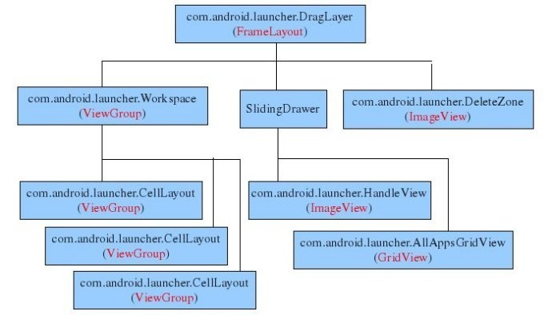

Launcher简要分析说明。
结构分析
home screen的代码位于packages/apps/Launcher目录。从文件launcher.xml，workspace_screen.xml可获知home screen的UI结构如下图所示：

整个homescreen是一个包含三个child view的FrameLayout（com.android.launcher.DragLayer）。
第一个child就是桌面com.android.launcher.Workspace。这个桌面又包含三个child。每个child就对应一个桌面。每个桌面上可以放置下列对象：应用快捷方式，appwidget和folder。
第二个child是一个SlidingDrawer控件，这个控件由两个子控件组成。一个是com.android.launcher.HandleView，就是Android桌面下方的把手，当点击这个把手时，另一个子控件，com.android.launcher.AllAppsGridView就会弹出，这个子控件列出系统中当前安装的所有类型为category.launcher的Activity。
第三个child是com.android.launcher.DeleteZone。当用户在桌面上长按一个widget时，把手位置就会出现一个垃圾桶形状的控件，就是这个控件。
在虚拟桌面上可以摆放四种类型的对象： 1. ITEM_SHORTCUT，应用快捷方式 2. ITEM_APPWIDGET，app widget 3. ITEM_LIVE_FOLDER，文件夹 4. ITEM_WALLPAPER，墙纸。
类AddAdapter（AddAdapter.java）列出了这四个类型对象。当用户在桌面空白处长按时，下列函数序列被执行： Launcher::onLongClick –> Launcher::showAddDialog –> Launcher::showDialog(DIALOG_CREATE_SHORTCUT); –> Launcher::onCreateDialog –> Launcher::CreateShortcut::createDialog:这个函数创建一个弹出式对话框，询问用户是要添加什么（快捷方式，appwidget, 文件夹和墙纸）其内容就来自AddAdapter。
类Favorites(LauncherSettings.java)和类LauncherProvider定义了一个content provider，用来存储桌面上可以放置的几个对象，包括shortcut, search和clock等。
类DesktopItemsLoader负责将桌面上所有的对象从content provider中提取。
线程private ApplicationsLoader mApplicationsLoader负责从包管理器中获取系统中安装的应用列表。（之后显示在AllAppsGridView上）。ApplicationsLoader::run实现： 1）通过包管理器列出系统中所有类型为Launcher，action为MAIN的activity； 2）对每一个Activity, a) 将Activity相关元数据信息，如title, icon, intent等缓存到appInfoCache； b) 填充到ApplicationsAdapter 中。填充过程中用到了一些小技巧，每填充4（UI_NOTIFICATION_RATE）个activity更新一下相应view。
在Launcher::onCreate中，函数startLoaders被调用。而该函数接着调用loadApplications和loadUserItems，分别获取系统的应用列表，以及显示在桌面上的对象列表（快捷方式，appwidget，folder等）。
Launcher上排列的所有应用图标由AllAppsGridView对象呈现。这个对象是一个GridView。其对应的Adapter是ApplicationsAdapter，对应的model则是ApplicationInfo数组。数组内容是由ApplicationsLoader装载的。 private class ApplicationsLoader implements Runnable。
启动过程分析
一LauncherApplication->onCreate –1.//设置最小堆内存4M –2.//建立应用图标缓存器 –3.//建立LauncherModel –4.//注册Intent.ACTION_PACKAGE_ADDED，Intent.ACTION_PACKAGE_REMOVED，Intent.ACTION_PACKAGE_CHANGED事件监听器 LauncherModel作为广播接收器对上面3中事件进行监听 –5.//添加对桌面favorites content provider 数据变化监听器
二Launcher->onCreate –1.获取LauncherApplication LauncherModel mIconCache等LauncherApplication初始化的对象 –2.新建拖放控制器new DragController(this) –4.//获取桌面组件管理器，启动桌面组件host –待深入研究 –5.//从array.hotseats中加载所有的hotseats(热键 如挂机按钮，google浏览器) –待深入研究 –6.从launcher.preferences加载本地设置 –7.//设置壁纸尺寸宽度=display.getWidth()* WALLPAPER_SCREENS_SPAN，高度=display.getHeight() –8.//加载布局文件 –9.//初始化所有控件 –10.//从Bundle savedInstanceState获取桌面持久化数据 设置mRestoring = true; –11.如果mRestoring == false,调用LauncherModel加载桌面项 mModel.startLoader(this, true,isLanguageChange); –a.LauncherModel.Loader.startLoader() 代码同步处理 –b.新建LauncherModel.Loader.LoaderThread线程并启动线程(桌面项加载，详细见第三步) –12.注册Intent.ACTION_CLOSE_SYSTEM_DIALOGS广播监听
三 桌面项加载 LauncherModel.Loader.LoaderThread.run：新线程执行 –1.等待主线程运行结束才开始加载 –2.判断是否先加载桌面；loadWorkspaceFirst = cbk != null ? (!cbk.isAllAppsVisible()) : true; –3.loadWorkspaceFirst==true –a.loadAndBindWorkspace() –loadWorkspace():从数据库launcher.db中查询中所有桌面项构造对应类型的ItemInfo对象存入 mItems，mAppWidgets，mFolders列表。 –bindWorkspace(): –1.laucher.startBinding(),异步调用，在主线程中handle //do no things –2.laucher.bindItems(),异步调用，在主线程中handle –1.根据ItemInfo对象创建桌面图标view对象 –2.获取item.screen, item.cellX, item.cellY, spanX, spanY, 调用workspace.addInScreen添加到对应桌面的cell –1.重新设置桌面图标view 的layoutparam(类型为cellLayout.layoutparam) –2.根据item.screen获取桌面的celllayout对象，也就是workspace下5个用户桌面中的一个 –3.调用celllayout.addview方法把桌面图标view对象添加为celllayout的child,也就是为用户桌面添加一个桌面图标 –4.桌面图标view对象添加OnLongClickListener=laucher,由laucher负责监听桌面图标view的longclick事件 –5.如果桌面图标是DropTarget对象，拖放控制器mDragController添加该view到拖放目的地列表 –3.laucher.bindFolders(),异步调用，在主线程中handle //launcher.mFolders.putAll(mFolders); –4.laucher.bindAppWidget(),异步调用，在主线程中handle –1.获取LauncherAppWidgetInfo的appWidgetId –2.获取AppWidgetProviderInfo appWidgetInfo mAppWidgetManager.getAppWidgetInfo(appWidgetId) –3.根据appWidgetInfo创建桌面组件的view AppWidgetHostView对象 –4.调用workspace.addInScreen添加到对应桌面的cell –5.laucher.finishBindingItems(),异步调用，在主线程中handle –mWorkspaceLoading=false –b.loadAndBindAllApps(); 如果没有加载apps或者改变了语言设置 loadAllAppsByBatch(); –1.//设置package 查询条件Intent.ACTION_MAIN Intent.CATEGORY_LAUNCHER –2.//清空mAllAppsList mAllAppsList.clear(); –3.//packageManager 查询所有应用pakages –4.分批次mAllAppsList.add 应用pakages –5.laucher.bindAllApplications()//异步调用 –mAllAppsGrid.setApps(apps) –6.若分多个批次加载 laucher.bindAppsAdded()//异步调用 –mAllAppsGrid.addApps(apps); 否则 onlyBindAllApps(); –1.mAllAppsList.data.clone(); –2.laucher.bindAllApplications()//异步调用 –mAllAppsGrid.setApps(apps) –4.loadWorkspaceFirst==false –a.loadAndBindAllApps(); –b.loadAndBindWorkspace();